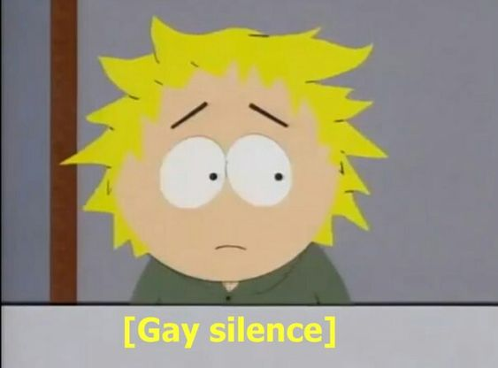
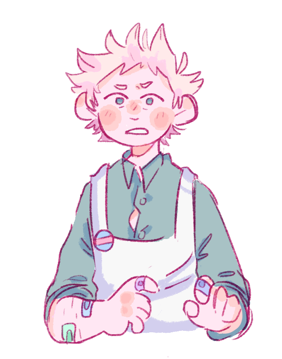
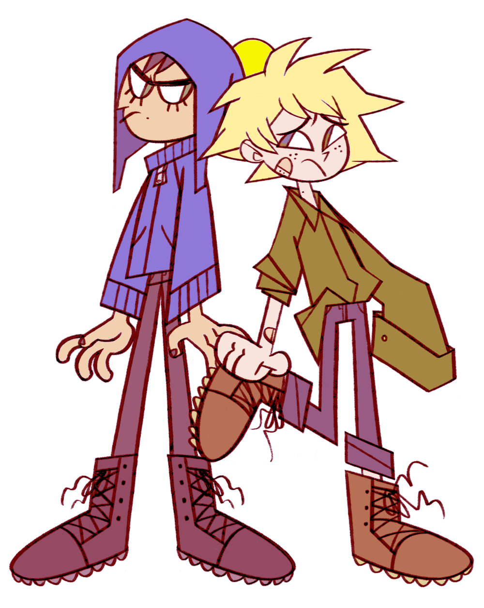
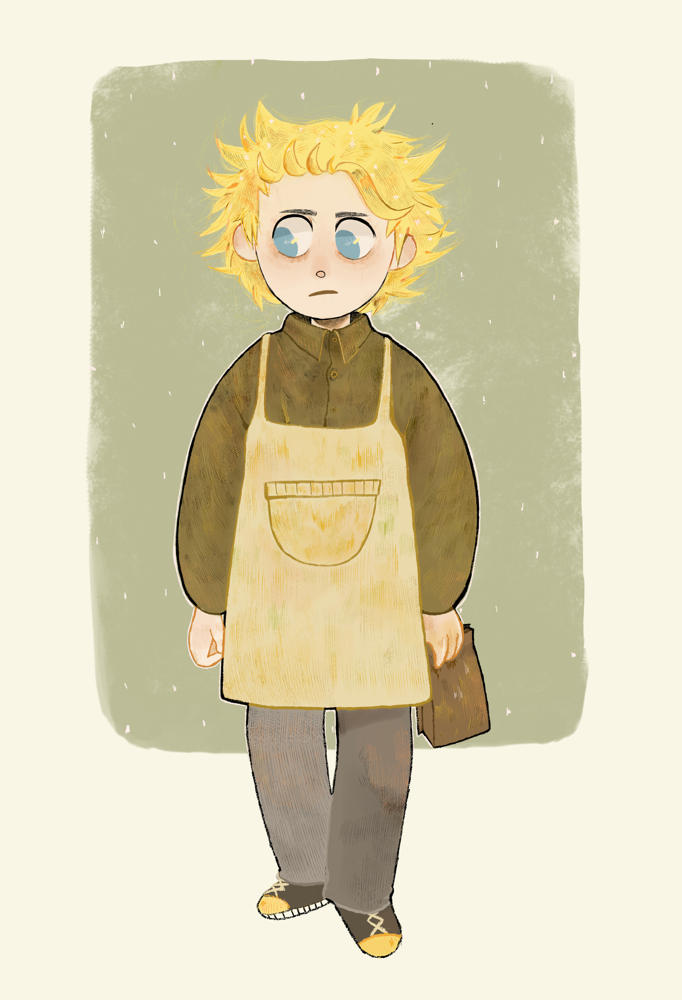

versions

fanon 1: mental health wreck (warning for mentions of self harm and suicide, and i'll try to avoid mention of kinda serious drug usage)
personality
usually tired. usually paranoid and anxiety ridden. this tweek is depicted as very depressed and anxious most of the time. usually his coffee addiction is mentioned along with his not-so-great parents.
often times this tweek has been depicted as someone who has done suicide attempts and harms himself (because of stress anxiety or depression, one of the three or all of them). another thing to add is that he is almost always working in his parent's coffee shop.
relationships
craig
this tweek tends to be between clingy and reliant to independent, so his relationship with craig varies in that way. generally he'll be somewhat independent either way, craig is just great at reducing his depression and dark thoughts. which takes us to the point that craig will either be the cause of some of his stress, or he'll be the cure to it. one of the two. generally his relationship with craig is fairly good (if they're not split up for some angsty reason), theres most likely no abuse, and they're depicted as good partners, even if there are some issues.
kenny
yep you guessed it! kenny's invloved. why? still don't know, but i guess i'm not complaining. suprisingly this tweek is either the wingman to kenny (and mental support) or it's vise versa. kenny will often hang around the coffee shop and look snarky but be nice and supportive at the same time, offering very good advice when tweek is down or theres some craig invloved problem. so yep! more likely than not, mentally stressed tweek is on good terms with ken. (also to mention: he has a similar relationship with butters)
craig's gang
well! they don't usually exist with this tweek, but if they do i assume they are either shipping tweek and craig like crazy, or they're just really worried about this messy haired blond.
appearence

fanon 2: woobified, uwuified
personality
ugh. theres always one of these. all you anime nerds probably know of this personality trope. basically: "uwu cwaig! cartman is buwwiwing me uwu. hewp me uwu". this tweek is quite literally a wimp. he can't do anything without the assistance of craig. neither does he really fit in into the general "south park kid" category. he's just.. way too soft, unsually so. he may as well just be a damsel in distress.
relationships
just a warning, i haven't often read many fics/seen that much fanart that depicts him this way, so i'm just sorta guessing
craig
welp! don't know what you're expecting. not much to say here, he's basically just tweeks strong, bodyguard boyfriend. no more depth than that.
craig's gang
i'm. not actually sure about this one? i think they just kinda. serve as background characters? something like that, token and clyde usually just date in the back i guess. they're not important in the story or fanart to remember, so i think that says something.
appearence

average age dipiction
13-20+
summary
well i'm a little biased, since i quite like mental health wreck tweek in the fanfiction i read. but other than that, i think tweek is also fairly treated well by the fandom.
yes, okay i know that maybe still a good 60-75% woobify tweek in their content, but tweek is a difficult character to balance, so thats okay! and still, a fair good lot of the content i see for him is really well done! a lot of people treat him well, which (if you've read my criag summary) matches a lot with craig! since they basically share content with eachother. cause you know, creek canon,,.
final assesment: calm down a little fandom, but otherwise, the 40% of you over there making amazing content- keep going! you carry the entire creek fandom on your shoulders!!
fanart

art by @kblankart on tumblr

art by @daffodilp on tumblr!